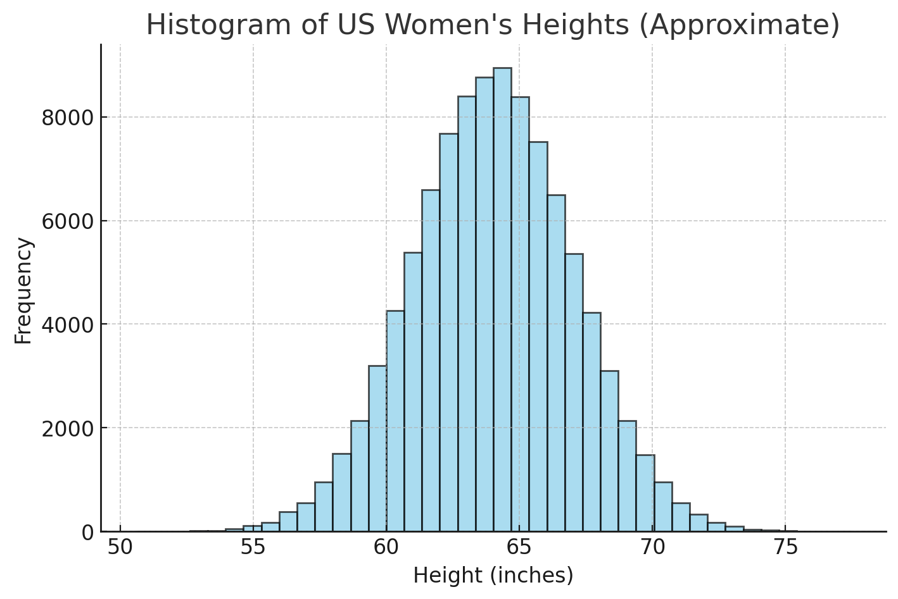
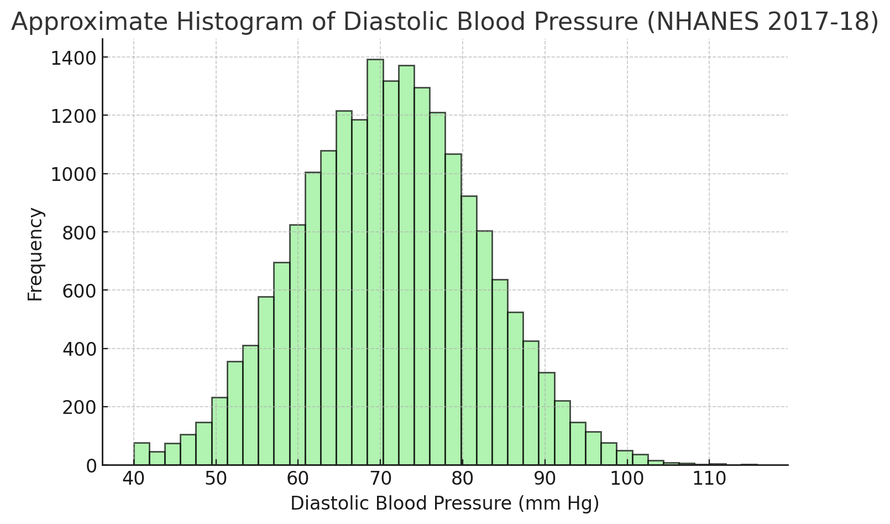

Activity: Match the Scenario to the Distribution
Objective
You will practice identifying which type of probability distribution (binomial, Poisson, or normal) can approximately fit or describe a given real-world context, and explain why.
Instructions
Form a group of four or five.
Scan the QR code, or go to https://forms.office.com/r/X58MYTbEne to fill out your names.
In the form, read each scenario, choose the most appropriate distribution, or all three distributions may not be appropriate to model the scenario.
The first group with the most correct answers will get a hex sticker, and share their reasoning!
Scenarios
A quality inspector checks 20 light bulbs, each having a 5 percent chance of being defective. What distribution models the number of defective bulbs?
The number of emails arriving in Dr. Yu’s inbox between 2 and 3 pm.
The distribution of households income in 2010 in the USA.
- The number of students who show up to class without doing their homework, out of 30 students.
The number of cars passing through a toll booth in a 10 minute interval.
The heights of adult women in the United States.

Students’ letter grades in Dr. Yu’s MATH 4720 class (A, B, C, D, F).
The distribution of blood pressure of adults in Milwaukee.

Quick Reference: Key Features
| Distribution | When to use | Common parameters |
|---|---|---|
| Binomial | Fixed number of trials, two outcomes per trial, constant probability, independent trials | \((n)\) number of trials, \((\pi)\) probability of success |
| Poisson | Counting events in a fixed interval of time or space, events occur independently at a constant average rate | \((\lambda)\) average rate per interval |
| Normal | Continuous measurements that are symmetric around a center with bell shape | \((\mu)\) mean, \((\sigma)\) standard deviation |
10:00